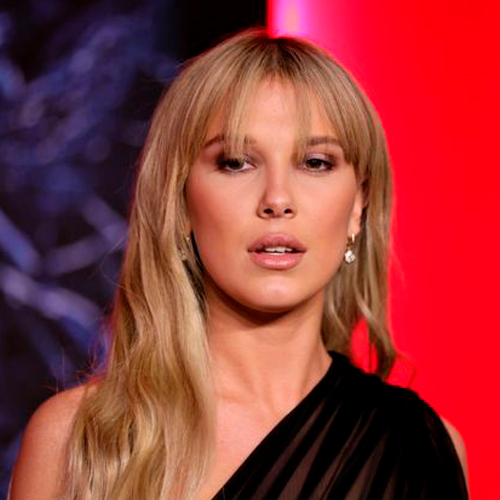

Millie Bobby Brown (Once)
Finn Wolfhard (Mike)
Gaten Matarazzo (Dustin)
Caleb McLaughlin (lucas)


Noah Schnapp (will)
Dacre Montgomery (Billy)
Sadie Sink (Max)
Natalia Dyer (Nancy)
Shannon Purser (Barb)
Priah Ferguson (Erica)
Sean Astin (Bob)
David Harbour (Hoper)
Maya Ray Hawke (Robin)
Joe Keery (Steve)
Winona Ryder (Joyce)
Brett Gelman (Murray)

Matthew Modine (Dr. Martin)
Paul Reiser (Owens)
Joseph Quinn (Eddie)
Jamie Campbell (Uno)